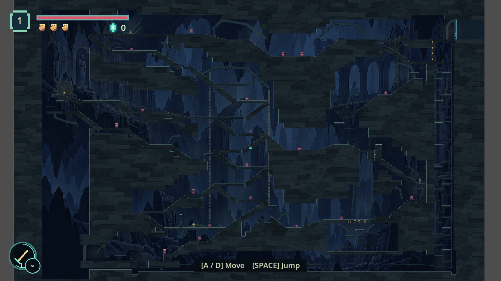
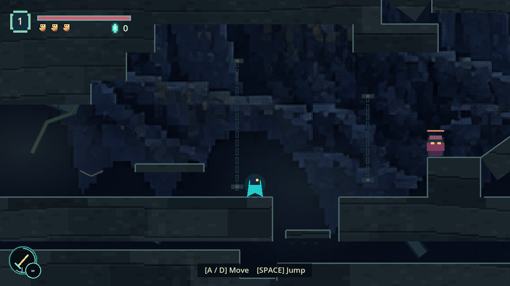
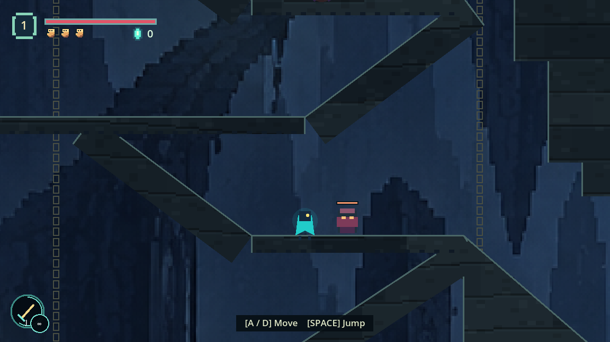
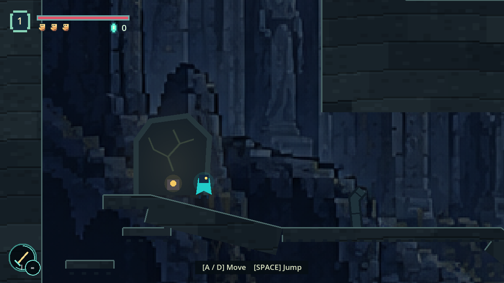
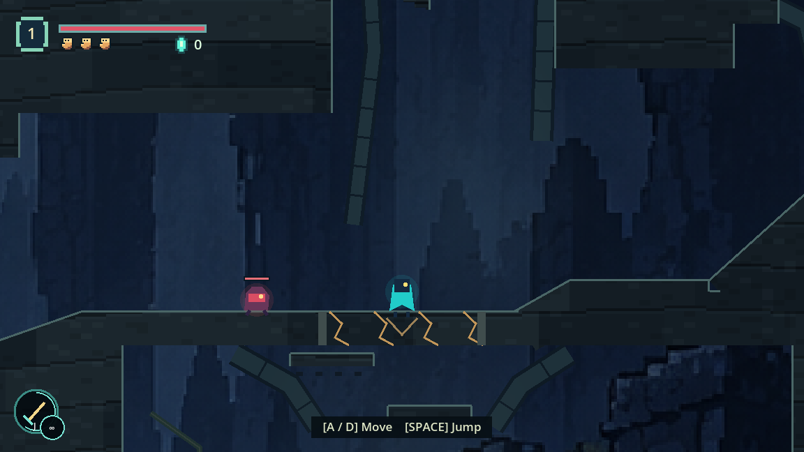
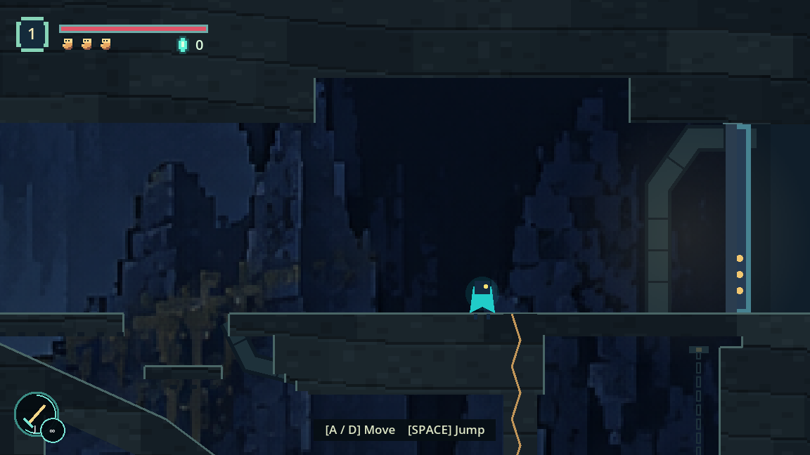
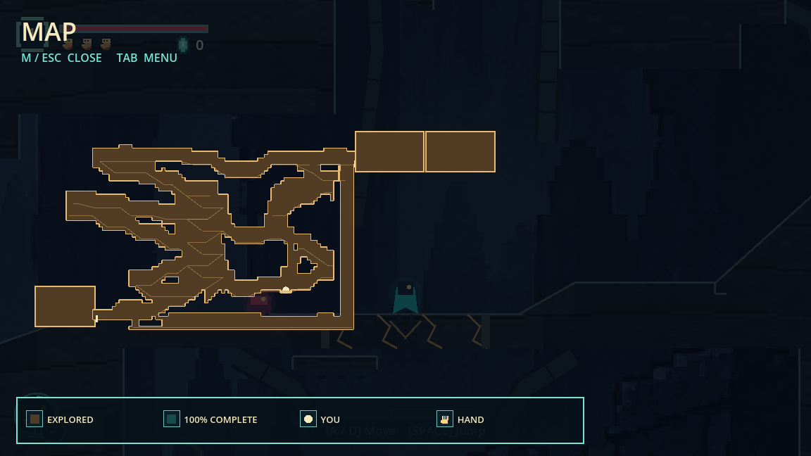
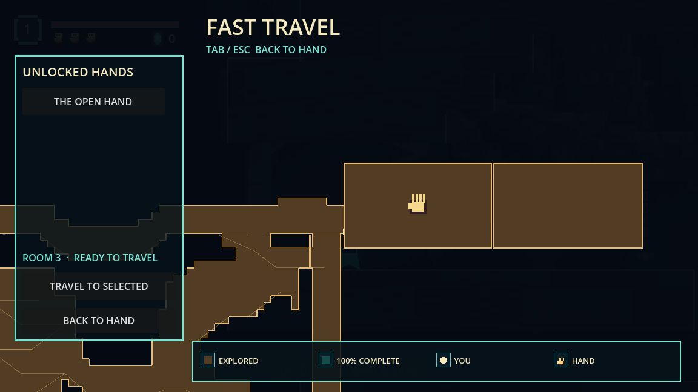

The Split Gallery
Room 1 connects at the lower left; Room 3 connects at the upper right. A damaged suspension gallery joins the memorial, offering chambers and deep foundations. The fourteen work zones share one cave silhouette, material and distant composition.
Approved plan, zone record and verification · Reusable art rules

Overview: large solid partitions separate the western memorial, central well and eastern passages. The heavy return runs down the far-right service shaft and along the basal tunnel. Its future-floor pocket has solid sides and bottom.

Broken Balcony: quiet receiving space, visible support edges and the retained jump/sentinel encounter. The low return step rejoins the entrance.

Chain Well: paired anchored chains establish a persistent vertical landmark. Background detail stays below the contrast of actors and usable edges.

Memorial: a single carved stone silhouette survives collection of the Sigil. It differs from the offering's low root bowl and the well's suspension machinery.

Future floor: compressed edge blocks and downward fracture shape frame the sole future aperture. No current ability opens it; the enclosed pocket remains unexplored on the map.

Upper exit: a stable receiving floor, ordinary three-hit seal and recessed doorway. The heavy shortcut branches beneath it.

The map preserves the diagonal relationship between both room connections and omits the future pocket's interior.

Fast travel compensates for the raised neighboring rooms so the selected hand remains visible.
Verified in the game
Continuous ascent and return, physical optional rewards, all authored route links, combat approaches, charged heavy gate, solid shell and future pocket, doorway transitions, checkpoint preservation, reload and forest travel passed. The heavy return took 29.08 seconds versus 65.07 seconds retracing the main ascent, with enemies disabled and no dash. This is a comparison of those routes, not a claim about optimal speedrun routing.
Captures use the running root Godot project and no active player save slot. Combat integration uses invulnerability; difficulty balance still benefits from ordinary player feedback. The background was created with the built-in image-generation tool using this project's cave art as a style reference.